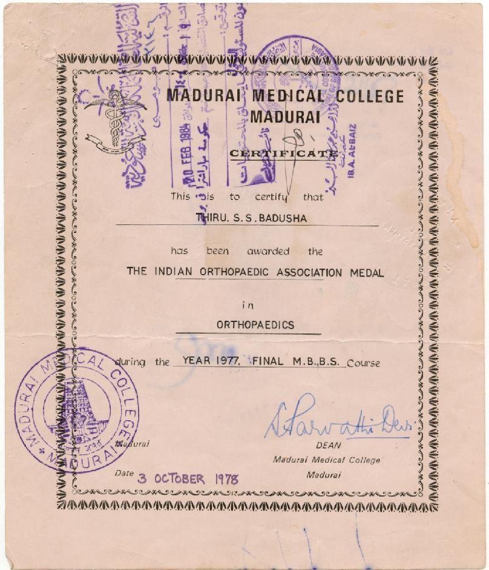
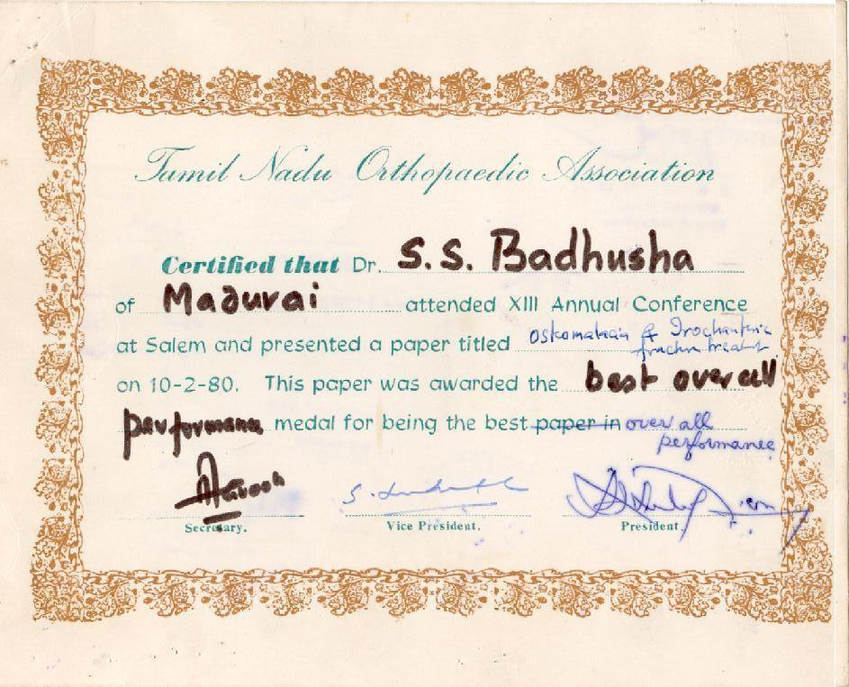
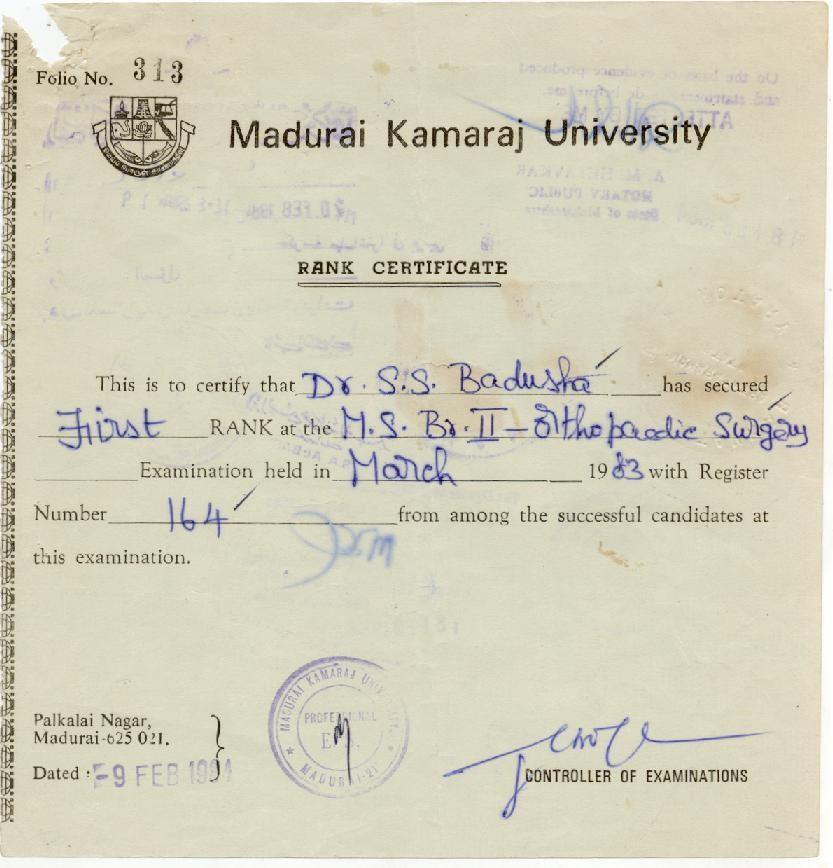
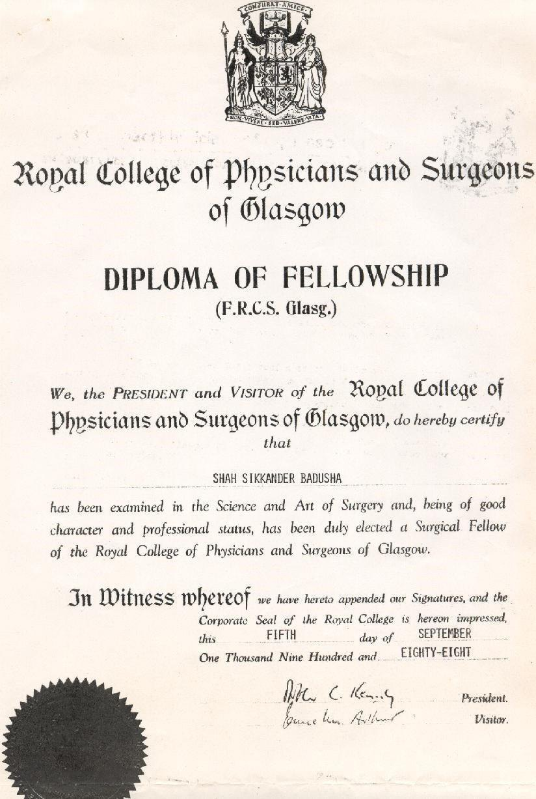
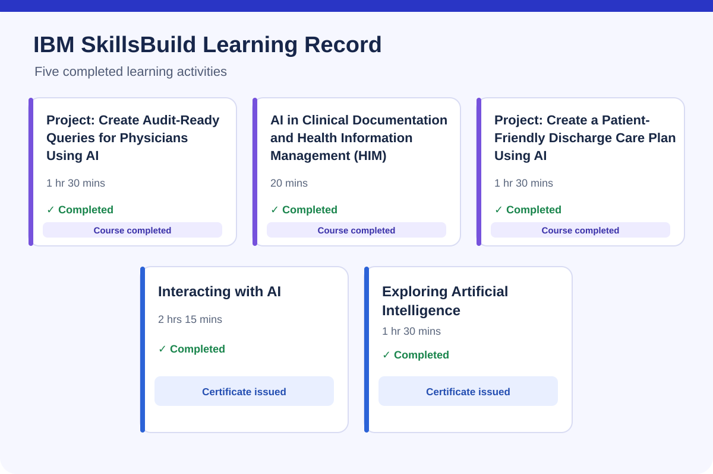

Indian Orthopaedic Association Gold Medal
1977 · Orthopaedics. Academic and professional distinction recorded in my curriculum vitae.
Clinical judgement. Clear evaluation.
Patient safety at every step: a detailed journey from registration and triage to clinical reasoning, imaging, pharmacy, discharge and recovery at home.
Explore the patient journeyReview the ten rubricsSee an evaluation exampleAcademic distinction · Medals · Professional recognition
View Original Certificates & Recommendation Letters
University first ranks in both postgraduate orthopaedic qualifications, national and state orthopaedic honours, professional fellowship and healthcare quality recognition.
1977 · Orthopaedics. Academic and professional distinction recorded in my curriculum vitae.
1980 · XII Annual Conference of the Tamil Nadu Orthopaedic Association.
1981 · Diploma in Orthopaedic Surgery, Madurai Kamaraj University.
1983 · MS Orthopaedic Surgery, Madurai Kamaraj University.
1988 · Fellowship of the Royal College of Surgeons, Glasgow.
Professional recognition associated with hospital quality and patient-care improvement initiatives. The year and formal award documentation can be added when verified.




Completed five IBM SkillsBuild learning activities covering artificial intelligence, clinical documentation and health information management, audit-ready physician queries, and patient-friendly discharge planning. Certificates were issued for Interacting with AI and Exploring Artificial Intelligence.

Issued to Dr. Shah Sikkander Badusha on 3 November 2026. Select the badge image to verify it on Credly.
![IBM SkillsBuild AI Literacy digital badge]()
CRICO/Harvard risk-management certificates form part of my professional training record. Individual certificate titles, issuing dates and scans will be displayed here once checked against the originals.
Explore the original documentary record
The 17-page documentary portfolio has been recovered and reviewed. Seven original scans are now hosted in the repository and displayed on the documentary evidence page.
A complete hospital workflow
Explore a step-by-step patient journey covering pre-registration, accessible navigation, appointment and walk-in management, clinical information verification, investigations, consultant-led imaging review, medication reconciliation and multidisciplinary discharge safety.
The clinical perspective
A medical response can be fluent and still miss a dangerous diagnosis, overlook a risk factor or recommend treatment in the wrong order. My evaluation approach examines the decision and its consequences for the patient.
Does the conclusion follow from the history and findings? What alternatives remain possible, and what information is missing?
Has the response recognised red flags, medication risks and the need for escalation? Could following it delay essential care?
Identify the error, explain the consequence and describe a safer sequence of actions that can inform model improvement.
A structured review method
My clinical AI evaluation framework uses ten review areas to examine a response, supported by sixteen labels describing specific errors. This is a clinician-developed evaluation method; independent validation has not yet been established.
Each review connects an identified error to a safer recommendation and its clinical rationale, with guideline support where applicable.
Inappropriate certainty / false reassurance; premature diagnostic closure; anchoring; negative imaging overweight; severity / urgency underweighted; missed risk modifier; missed red flag; incorrect side / timing; unsupported diagnosis; invented normal examination; omission; medication error; investigation sequencing error; management sequencing error; diagnostic validity fail; negation error.
Same patient; Accurate records and images; Findings and plan agree; Exact procedure, site, side and level; Consent and marking; Active team time-out; Recognise risk and respond; End-of-procedure checks and handover.
An illustrative evaluation
This fictional example shows how the review method is applied. It is an educational illustration, rather than a record of a measured model test.
Scenario · a fall and a normal X-ray
An older patient has hip pain after a fall and cannot bear weight. An AI response uses the normal initial X-ray to rule out a fracture.
Labels: Negative imaging overweight; inappropriate certainty / false reassurance.
Rubrics: R1 Diagnostic fidelity; R7 Red-flag fidelity; R9 Uncertainty fidelity.
Acknowledge the possibility of an occult fracture, reassess the clinical findings and arrange further evaluation and imaging appropriate to the clinical situation and applicable guidance.
An unsupported conclusion can delay diagnosis and care. The evaluation must examine whether the response recognises the limits of the evidence and communicates uncertainty safely.
Examples are for AI evaluation education and do not provide individual medical advice.
Experience behind the evaluation
My background brings together orthopaedic surgery, trauma care and senior medical administration, including work in JCI and NABH accreditation environments.
Areas of experience include operating theatre workflow, emergency care processes, medication safety, falls prevention and documentation governance.
Generative AI use since January 2026; structured clinical AI evaluation since September 2026.
Practical experience behind the proposed AI workflow
My clinical AI evaluation approach grows from years of dealing with the practical risks that arise when patients move between reception, clinics, diagnostic services, wards, theatres and home.
Introduced and supported ward-pharmacist involvement in medication review, patient counselling and discharge reconciliation. The safety focus was on identifying discrepancies before they reached the patient.
Developed a centralised consultant-supervision concept for ultrasound reporting, allowing senior review of images and junior reports before final authorisation. The website describes how source-linked AI review could extend this principle.
At Apollo Hospitals Dhaka, I led multidisciplinary discharge verification and patient counselling on medication schedules, wound care, warning signs, contact routes and follow-up. We adapted explanations to health literacy, language and practical barriers, including transport, food access and caregiver support. Hello Apollo — Care Beyond Boundaries extended this established care through post-discharge calls; the documented 2011 cardiothoracic pilot used calls on three consecutive days.
Experience in theatre throughput, emergency department operations, coordination between specialties and the prevention of avoidable delays and handover failures.
Work involving ICU monitoring, emergency response preparation, falls prevention, documentation governance and accreditation-related safety processes.
I am applying prompt engineering to help generative AI draft patient-facing discharge instructions from a verified clinical plan. I review drafts for accuracy, omissions, contradictions, hallucinations, readability, patient-specific barriers and clear clinician accountability.
These are descriptions of professional experience and proposed methods, not independently audited outcome claims. Specific numerical performance results should be published only with suitable evidence and attribution.
Making clinical AI safety understandable
Clinical stories can make AI errors easier to recognise. They show what an answer overlooks, what that omission means for a patient and how feedback can guide a safer response.
Published Kindle eBook
Dr. Shah S Badusha
A story-led exploration of clinical AI evaluation, connecting patient scenarios with error labels, clinical consequences and safer recommendations.
Published on Amazon Kindle · $2.99 USD
View the Kindle book on Amazon
ASIN: B0HPG6FCDV
Professional interests
Interested in remote clinical AI evaluation, medical response review, clinical reasoning assessment and patient safety research.
Particular interests include orthopaedics, trauma, sports medicine, medication safety and the recognition of dangerous omissions in medical AI responses.
Appreciation · Feedback · Supporting evidence
A growing record of feedback on patient experience, hospital leadership, quality improvement and multidisciplinary care. Original correspondence and certificates will be added here with dates, attribution and appropriate privacy protection.
Appreciative correspondence concerning patient-experience and healthcare improvement initiatives. The original communication and its context will be presented when available for verification.
Leadership feedback, commendations and recognition of multidisciplinary team performance, including the applause for leadership previously discussed.
Selected comments on care quality, accessibility, service coordination and patient experience. Any published extracts will exclude identifiable patient details unless appropriate permission is documented.
Documentation and feedback on proactive contact during the first seven days after discharge, patient reassurance and escalation of recovery concerns.
Feedback and supporting records relating to ward-pharmacist involvement, medication safety, patient counselling and discharge reconciliation.
Supporting correspondence on JCI reaccreditation, quality initiatives and hospital-wide improvement efforts, with precise attribution to the participating teams.
Read the evidence and appreciation record
The previously compiled documentary portfolio has been located. Its letters and certificates are described in the linked evidence record; the scans themselves are not yet publicly hosted.